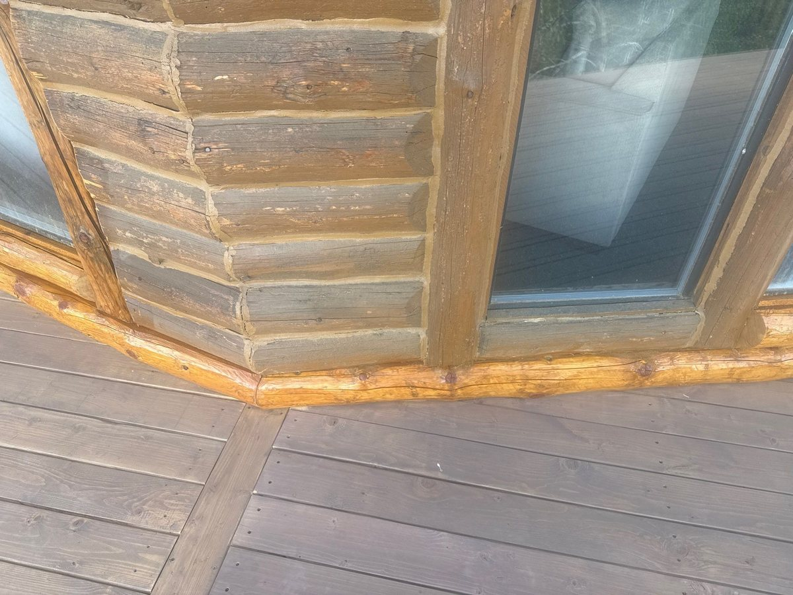
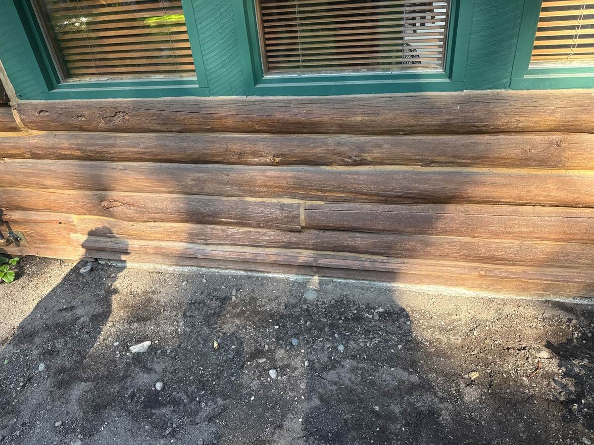
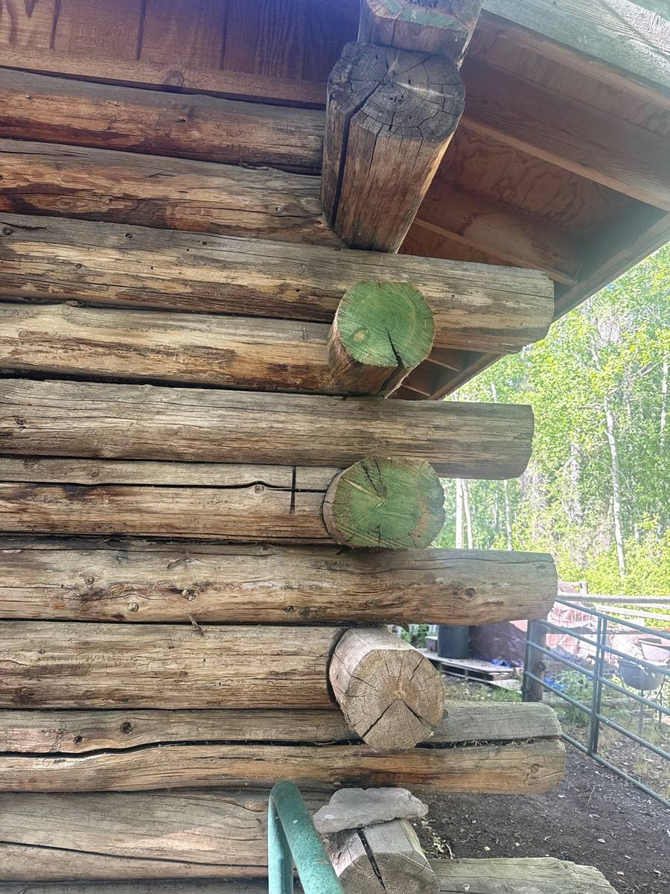
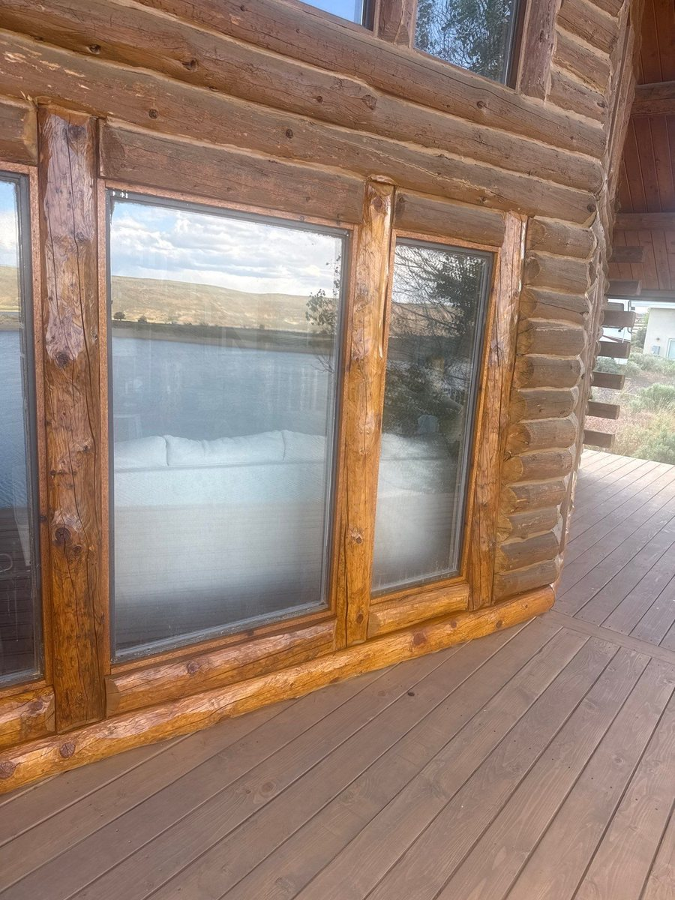

Rot on a log home is rarely a mystery once you know where to look. It starts low and it starts where water gets trapped: the bottom course of logs, the exposed log ends at the corners, the sill logs under big windows, and anywhere a deck meets the wall. The good news is that a soft log doesn't mean a failing house. Most log home rot repair is local work: find the bad wood, cut it out, replace it, and fix whatever let the water in. Here's how we approach it on log home restoration jobs around Sun Valley, Bellevue, and the Wood River Valley.

Where log rot starts
Wood only rots when it stays wet. Logs that get rained on and then dry out can last a century. Logs that sit damp for weeks at a time won't. So rot shows up in the same handful of places on almost every log home we look at:
- The bottom course. Soil, mulch, or landscaping built up against the first log keeps it wet from below. Rain splashes dirt and water back onto it from above. In Idaho, snow piles against it for months.
- Log ends at the corners. End grain soaks up water like a bundle of straws. Ends that stick out past the roofline catch every storm and wick that moisture deep into the log.
- Under windows and doors. Water runs down the glass and collects on the sill log. If the flashing is missing or failed, it gets behind the trim, where nobody sees it.
- Deck lines. Deck boards and ledgers hold water and snow right against the wall, often with no way to drain or dry.
- Upward-facing checks. Cracks on the top side of a log act like little gutters, holding water inside the wood instead of shedding it.

How to check your logs for rot
You don't need special tools to do a first pass. Walk the house on a dry day and pay closest attention to the places above.
- The probe test. Press a screwdriver or awl into the wood. Sound log resists and splinters. Rotted wood lets the tip sink in easily, and the fibers come out soft, stringy, or crumbly.
- The tap test. Knock on the log with a screwdriver handle. A dull or hollow sound compared to the logs around it can mean decay inside a log that still looks fine on the surface.
- Color and growth. Dark, blotchy staining that won't dry out, fungus, or moss along the lower logs all mean the wood is staying wet.
- Sawdust. Small piles of fine dust under a log can mean insects, which go after wood that's already damp and softened.
If the screwdriver only goes in an eighth of an inch, that's surface weathering, and it's a finish problem rather than a structural one. Our guide to the signs your log home needs re-staining covers that. If it sinks in deeper, it's time for a closer look.


Log home repair options, from smallest to largest
The right fix depends on how deep the rot goes and how much of the log is affected. We always start with the smallest repair that will actually last.
1. Treat and refinish
When the damage is only on the surface, the wood gets cleaned back to sound fibers, treated with a borate preservative, and refinished. No logs come out.
2. Patch small pockets
An isolated soft spot, often at a check or a knot, can be dug out to solid wood and filled. Epoxy consolidants or a fitted wood patch both work, depending on size and location.
3. Replace a section of log
When rot runs along part of a log, the bad section is cut out and a new length of log is fitted in its place. This is the most common log home repair we do. On the Bellevue job above, the plan called for new bottom logs in 10-foot lengths instead of rebuilding the whole wall.
4. Replace full logs
When a whole course is gone, often the bottom log along an entire wall, it gets replaced end to end. The wall above is supported while the old log comes out, and the new log is shaped to match its neighbors so the repair blends in once it's chinked and stained.
Replacing a log without fixing the reason it rotted just resets the clock. Every repair we do comes with a plan for the water: flashing, drainage, end sealing, or all three.
Fix the cause, not just the log
New wood in the same wet spot will rot the same way. Once the logs are sound again, these are the changes that keep them that way:
- Pull the grade down. Keep soil, mulch, and planting beds well below the bottom log, and slope the ground away from the house. Gravel at the drip line cuts down on splashback.
- Flash the vulnerable spots. Proper flashing at window sills, door thresholds, and deck ledgers sends water out and away instead of behind the logs.
- Seal the log ends. End grain needs its own sealer to stop wicking. Our crew's note on the Bellevue job said it in five words: wax the end and stop wicking.
- Manage the roof water. Gutters that overflow or eaves that are too short dump water straight onto the walls below.
- Keep the finish up. A healthy stain sheds water before it reaches the wood. New logs need stain that matches the old work, which is exactly what the Magic Reservoir job above was about.
Why it matters more in the Wood River Valley
Our winters are hard on log walls. Snow slides off roofs and piles against the bottom courses, then sits there through months of freeze and thaw. Every melt soaks the lowest logs, and every freeze opens their checks a little wider. That's why so much of the rot we find is in the bottom two or three courses, and why fall is the right time to check them. Our fall winter-prep checklist for log homes walks through what to look at before the snow comes.
What log rot repair costs
Every job is priced from what we find, so we won't throw out a number for work we haven't seen. The biggest factor is timing. A soft spot caught early is a patch or a section replacement. The same spot left for a few more winters can turn into full logs, rotted framing behind the trim, or a full log home restoration. Probing your bottom logs once a year is the cheapest maintenance you'll ever do, and our complete log home maintenance guide puts it on a schedule with everything else.
Chase Construction repairs and restores log homes across Sun Valley, Ketchum, Hailey, and Bellevue, and we handle the chinking and staining that finishes the job. Call 208-897-8100 to have your logs assessed. We'll tell you what needs replacing and what doesn't.